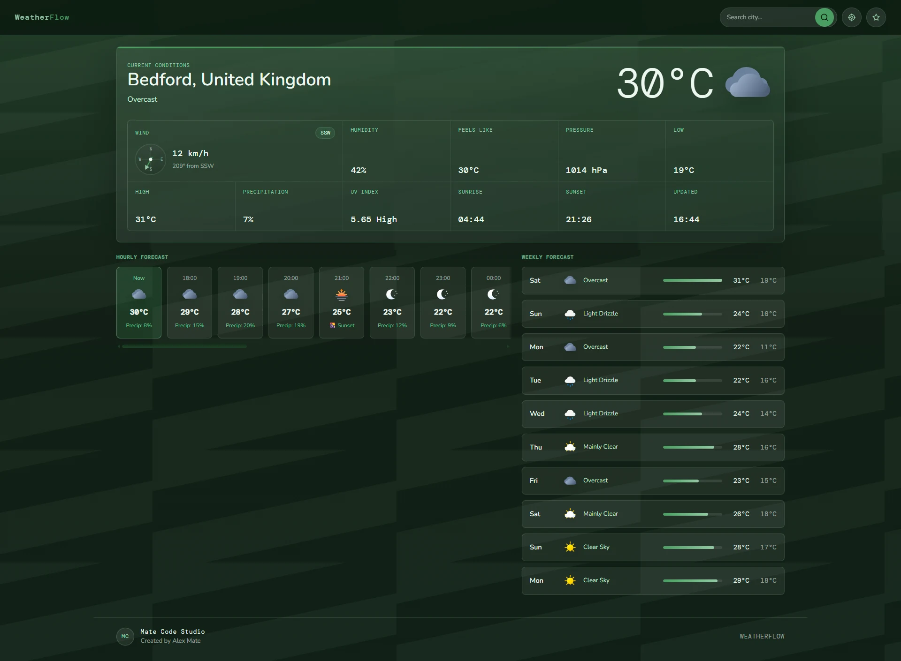
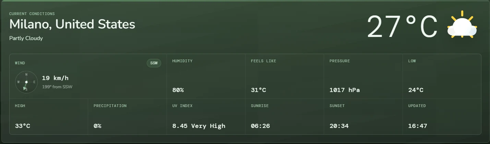
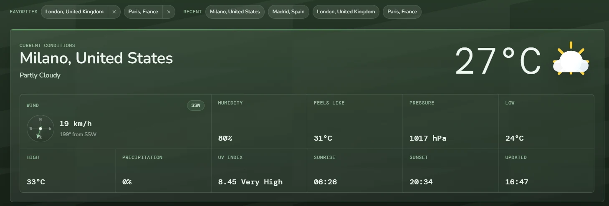

The challenge
Too many equally loud data points create visual noise.
Current conditions, secondary metrics, hourly forecasts and weekly forecasts are all useful, but they should not compete for the user's attention at the same level.
WeatherFlow
WeatherFlow is a weather dashboard project built around information hierarchy, repeated interface patterns and quick data scanning — the same principles that matter inside reporting screens, admin panels and business dashboards.
WeatherFlow · Dashboard

The project
A weather dashboard has to present a surprising amount of information at once: current conditions, temperature, wind, humidity, hourly changes, future forecasts and multiple locations.
The challenge is similar to many business dashboards. Having the data is not enough. The interface has to help someone understand what matters first and where to look next.
The challenge
Current conditions, secondary metrics, hourly forecasts and weekly forecasts are all useful, but they should not compete for the user's attention at the same level.
The goal
The solution
The page establishes one visual hierarchy and repeats it consistently through cards, metrics and forecast sections.
That makes the interface easier to learn and reduces the amount of effort needed to scan new information.
A deliberate decision
A common dashboard mistake is treating every piece of information as equally important. The result is usually a screen full of boxes competing for attention.
WeatherFlow instead follows the order in which the user is most likely to ask questions.
The same principle can be applied to sales dashboards, operations screens, booking systems and internal reporting tools.
Information hierarchy
Each layer adds detail without forcing the user to process everything at once.
What is happening at the selected location right now?
What additional metrics help explain the current conditions?
How are conditions likely to change during the next few hours?
What does the broader weekly outlook look like?
Interface walkthrough
The screenshots below show the overall dashboard, its detailed forecast structure and the location-management workflow.
Current conditions take priority, while secondary metrics, hourly information and the broader forecast remain accessible without competing with the main answer.

Consistent cards, spacing and labels help users compare repeated data without having to relearn the interface for every forecast period.

Saved and recent locations reduce repeated searching and create a quicker path back to information the user checks regularly.
Business relevance
The project demonstrates interface patterns that transfer naturally into business software.
Prioritise the numbers that matter now, then provide deeper pipeline and historical context.
Group statuses, tasks and operational metrics into predictable sections that can be scanned quickly.
Use repeated patterns to make dates, availability and customer information easier to compare.
Turn large sets of raw information into a clearer hierarchy that supports quicker decisions.
Project principle
Interface hierarchy should reduce the time between looking at a screen and understanding what the information is trying to tell you.
Need something similar?
Mate Code Studio builds practical dashboards and internal tools that organise information around the decisions people actually need to make.